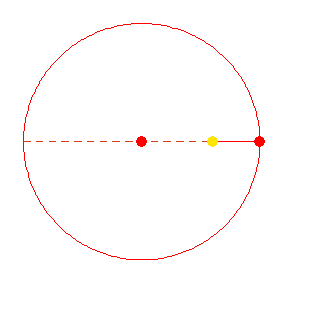
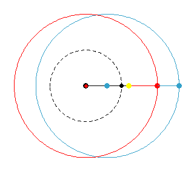

Aside: Eccentric motion vs Equant motion
Eccentric

In the simple eccentric, the planet moves uniformly around a circle, but is seen by an off-center (eccentric from Latin) observer, in this case, the sun. This causes the perceived speed of the planet to change: it is greatest near the sun and slowest when farthest from the sun. The line of apsides connects the fastest and slowest-appearing spots. The zoomed out view (on the right) allows you to see the line of sight from the sun through the planet out to the fixed stars to make clear the change of perceived speed.
Here, the planet moves uniformly while it is perceived to move non-uniformly.
Equant
In the eccentric animation above, the planet remains at a constant distance from the red dot, and also moves at a uniform angular speed around it. What if we break apart these two functions of the center, and have two centers instead: (1) a point from which the planet maintains a uniform distance, and (2) a point about which it has a constant angular speed. This second point is known as the equant, and appears as the black dot in this animation, while the blue dot serves as center (1). A dashed black circle has been added to make it easier to see that the planet is moving at a constant angular rate around the equant. The size of the circle is meaningless -- it is only there to help you gauge speed.
Now, the planet is both perceived to move on the right, and actually does move on the left, non-uniformly, creating a new kind of non-uniform perceived motion against the fixed stars.
Comparison

This is an overlay of the eccentric and equant animations. The dot on the left is both the black equant position and the red center for the eccentric animation. The extended lines out to the fixed stars in the animation on the right are drawn from the sun through the two planet-positions: the one given by eccentric, and the other given by the equant.